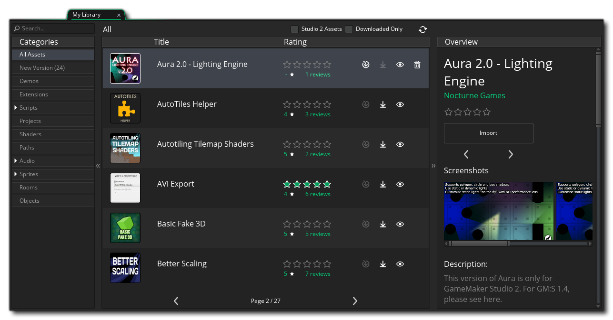
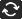
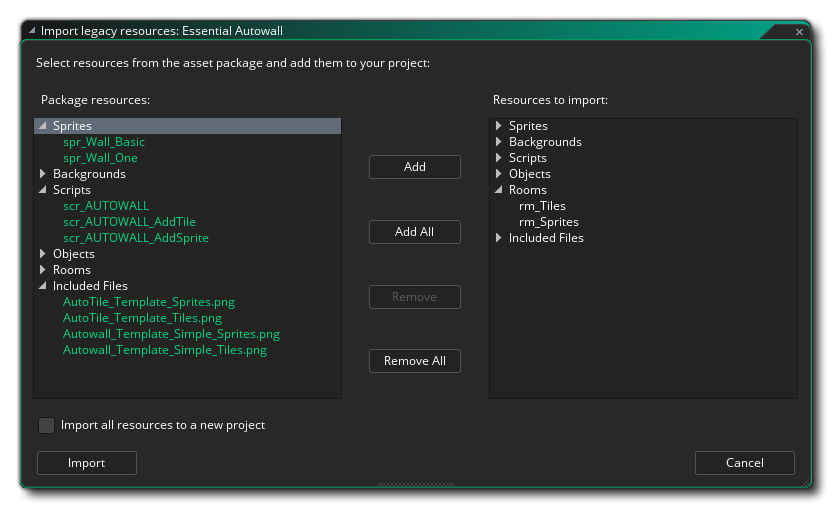
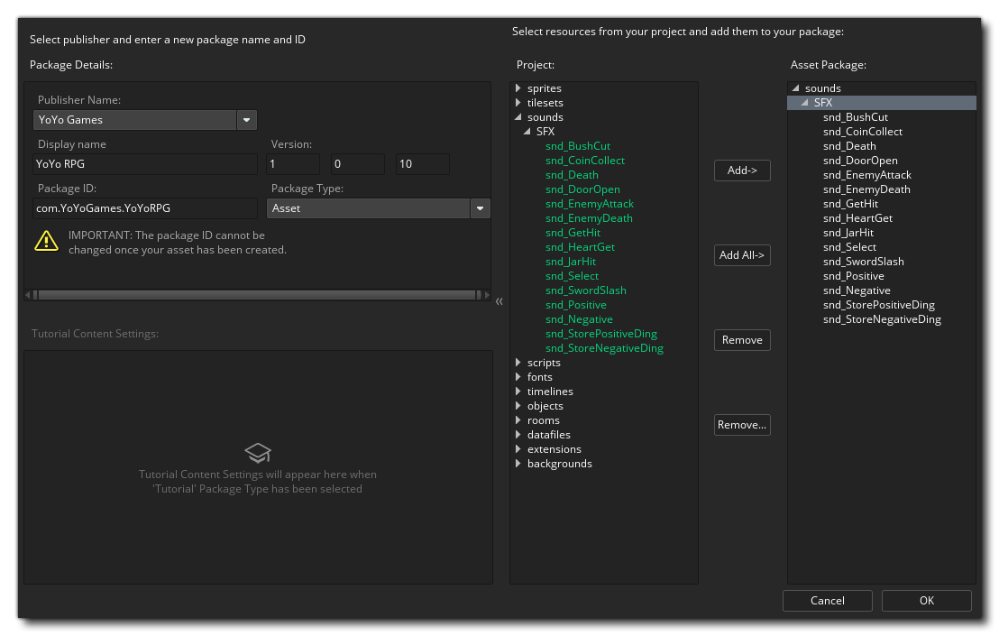

Der Marktplatz ist der YoYo Games Online-Markt für den Kauf und Verkauf von Asset-Paketen. Ein Asset-Paket kann fast alles sein, was mit GameMaker Studio 2, sprich: Sprites, Skripte, Shader oder sogar Vollspiel-Engines oder Frameworks. Um Pakete erstellen, kaufen und verkaufen zu können, müssen Sie zunächst auf dem Marktplatz als Publisher registriert sein und sich über GameMaker Studio 2 angemeldet haben (dies geschieht automatisch, wenn Sie sich beim Programm anmelden) oder von der Website des Marketplace. Ausführliche Informationen dazu, wie Sie Publisher werden können, finden Sie im YoYo Games Knowledge Base-Artikel Marktplatz - Einrichten eines Publisher-Kontos.
In diesem Fenster können Sie auf Ihr Benutzerkonto (und die damit verknüpften Publisher-Konten) oben rechts auf der Seite zugreifen. Sie können auch Asset-Pakete durchsuchen und kaufen oder herunterladen, um sie zu verwenden. Die vollständigen Informationen zum Kauf und Herunterladen eines Asset-Pakets finden Sie in der YoYo Games Hilfe unter Marketplace - Purchasing A Asset Pack.
Sie können den Marketplace ganz einfach über das Drop-down-Menü " Marketplace" oben in der GameMaker Studio 2 IDE GameMaker Studio 2 und haben die Möglichkeit, Ihre Bibliothek mit Asset-Paketen zu öffnen sowie eigene (Assets oder Tutorials) zu erstellen und vorhandene zu aktualisieren Pakete. Diese Ideen werden im Folgenden näher erläutert:
Das Bibliotheksfenster zeigt Ihnen die von Ihnen gekauften Pakete und gibt Ihnen die Möglichkeit, sie herunterzuladen und / oder zu Ihrem Projekt hinzuzufügen. 
Auf der linken Seite sind die verschiedenen Kategoriefilter, die Sie verwenden können, um zu sehen, was Sie in jedem haben, und dann in der Mitte haben Sie die Liste der Assets in Ihrer Bibliothek. Jeder kann ausgewählt werden, so dass Sie eine Übersicht dessen sehen können, was er tut (rechts) und alle haben Icons, um das Asset-Paket in einem Projekt anzuzeigen, herunterzuladen oder zu installieren. Beachten Sie, dass Sie zwei zusätzliche Filter oben im Hauptfenster haben, in denen Sie nur die Assets GameMaker Studio können, die speziell für GameMaker Studio 2 erstellt wurden, sowie einen Filter, um nur die Assets anzuzeigen, die Sie bereits heruntergeladen haben Maschine. Sie können auch die Liste der Vermögenswerte jederzeit gezeigt aktualisieren, indem Sie auf die Schaltfläche Aktualisieren klicken: 
Um ein Asset - Paket zu Ihrem aktuellen Projekt hinzufügen, müssen Sie es zuerst herunterladen, indem Sie auf die Schaltfläche Download klicken und wenn der Download abgeschlossen ist, können Sie auf die Schaltfläche Importieren klicken, um es zu einem Projekt hinzuzufügen. Wenn Sie ein Paket auf diese Weise hinzufügen, wird eine Erweiterung in Ihrem aktuellen Projekt erstellt und Sie werden aufgefordert, aus den verschiedenen Ressourcen im Asset-Paket auszuwählen, welche Sie hinzufügen möchten (oder Sie können alle importieren). Sie können auch die Option Alle Ressourcen in ein neues Projekt importieren auswählen. Anstatt die Assets zu Ihrem aktuellen Projekt hinzuzufügen, werden Sie von GameMaker Studio 2 aufgefordert, einen neuen Projektnamen einzugeben und das Asset stattdessen in diesem Projekt zu speichern. Beachten Sie, wenn Sie direkt in die Bibliothek auf der Startseite gehen, werden Sie die meisten Vermögenswerte finden nicht einzeln hinzugefügt werden können, und stattdessen werden Sie gezwungen werden, das Hinzufügen zu verwenden Alle Taste. Dies liegt daran, dass Sie kein Projekt zum Hinzufügen der Assets haben. Daher muss GameMaker Studio 2 ein neues Projekt erstellen, dem Sie alle Assets im Paket hinzufügen können (wenn Sie auf die Schaltfläche Importieren klicken, werden Sie aufgefordert, die Assets zu speichern neues Projekt mit dem Namen Ihrer Wahl). 
Mit den Assets, die zu Ihrem Ressourcenbaum hinzugefügt wurden, können Sie sie nun wie Ihre selbst erstellten Assets in Ihrem Spiel verwenden. Bitte beachten Sie, dass die vom Marktplatz heruntergeladenen Inhalte für den individuellen Gebrauch bestimmt sind und nicht an Dritte weitergegeben werden können. Sie können diese jedoch sichern und zur Sicherheit an andere Standorte kopieren, es sei denn, der Inhalt verfügt über eine benutzerdefinierte EULA, die das Gegenteil besagt.
HINWEIS: Die Personen, die Asset-Pakete für den Marketplace erstellen, arbeiten sehr hart daran, eine großartige Ressource für Sie zu erstellen. Ziehen Sie also in Erwägung, die von Ihnen gekauften Assets zu bewerten, wenn Sie sie getestet oder verwendet haben. Dies ermutigt den Entwickler und ist auch ein nützlicher Leitfaden für andere Benutzer hinsichtlich der Qualität der verfügbaren Assets. Sie können Ihre heruntergeladenen Assets einfach aus dem Bibliotheksfenster bewerten.
Wenn Sie die Option Paket erstellen im IDE-Menü auswählen, werden Sie zum folgenden Arbeitsbereich weitergeleitet: 
Hier müssen Sie zuerst die Publisher- Identität auswählen, unter der Sie das Asset-Paket veröffentlichen möchten (die Sie in Ihrem Publisher-Dashboard einrichten sollten), und dann einen Anzeigenamen und eine Versionsnummer angeben. Eine Paket-ID wird dann basierend auf dem angezeigten Anzeigenamen und dem verwendeten Publisher-Konto für Sie erstellt. Sie können dies jedoch ändern, wenn Sie möchten, solange das umgekehrte URL-Format beibehalten wird. Sie müssen dann den Typ des zu erstellenden Asset-Pakets auswählen:
- Asset: Dies ist eine Sammlung von Assets (Sprites, Skripte, Objekte usw.), die Sie auf dem Marktplatz verkaufen möchten
- Demo: Dies ist eine Demo, um ein Konzept oder eine Spielidee zu demonstrieren
- Tutorial: Der Asset hochgeladen wird ein Tutorial ist, entworfen von innerhalb der ausgeführt werden GameMaker Studio 2 IDE (siehe Abschnitt unten für weitere Details)
Sobald Sie dies getan haben, können Sie mit dem rechten Abschnitt auswählen, welche Ressourcen des Projekts Sie dem Asset-Paket hinzufügen möchten. Sie können alle Ihre Ressourcen hinzufügen, oder nur einige von ihnen, sowie alle, die Sie versehentlich hinzugefügt haben, entfernen. Es wird davon ausgegangen, dass Sie das Asset erstellt haben, das Sie zuvor in GameMaker Studio 2 hochgeladen haben, und dass das aktuelle Projekt alles enthält, was Sie zum Hochladen benötigen.
Wenn Sie bei der Auswahl von Vermögenswerten glücklich sind und wollen Ihr Paket auf den Markt laden, klicken Sie einfach auf die OK - Taste an der Unterseite, und das Asset - Paket wird erstellt und auf den Marktplatz hochgeladen werden. Wenn der Upload abgeschlossen ist, wird ein neuer Arbeitsbereich mit einer Browseransicht der Asset-Seite geöffnet, die Sie bearbeiten können. Weitere Informationen zum Einrichten dieser Seite finden Sie im Abschnitt Market Listing unter: Asset auflisten.
MERKEN! Um Asset-Pakete erstellen oder verwenden zu können, müssen Sie zuvor ein Benutzerprofilzertifikat erstellt haben. Sie können dies über die Marketplace-Einstellungen tun, die auf dieser Seite erläutert werden.
Das Erstellen eines Lernprogramms ähnelt dem Erstellen eines regulären Asset-Pakets. Jetzt müssen Sie nur bestimmte enthaltene Dateien hinzufügen sowie eine erste Lernprogrammseite (und eine optionale Videoseite) hinzufügen. Der Tutorial-Arbeitsbereich sieht etwa so aus:
Wie oben erläutert, müssen Sie einen Verleger wählen und dann Tutorial geben Sie einen Namen und eine eindeutige ID (Reverse - URL - Format) und dann in der „Typ“ Drop - Down - Tutorial wählen. Dadurch erhalten Sie zusätzliche Optionen, um eine Basis-HTML-Datei zum Starten des Lernprogramms sowie eine (optionale) Videodatei und URL hinzuzufügen. Die Videodatei sollte die Vorlage verwenden, die vom Marketplace bereitgestellt wurde - wie auch der Rest des Tutorials -, die Sie hier erhalten können. Wenn der Benutzer das Tutorial lädt, wird das Video in einen separaten Frame innerhalb der IDE geladen. Beachten Sie, dass die Seiten, die Sie für die Startseite und die Videoseite angeben, relative Pfade innerhalb der enthaltenen Dateien sind. Sie können einen Explorer öffnen, um andere als die Standardseiten auszuwählen, mit denen GameMaker Studio 2 die Felder GameMaker Studio.
Um Ihr Tutorial erstellen zu können, müssen Sie dem Tutorial-Projekt Included Files hinzufügen, und diese müssen auf sehr spezifische Weise hinzugefügt werden, damit die IDE richtig erkennt, welche Dateien für das Tutorial verwendet werden sollen. Die grundlegende Ordnerstruktur ist in der folgenden Abbildung dargestellt:
Also, wir haben zwei Hauptordner:
- TutorialContent: Alle Tutorial-HTML-Dateien, das CSS für deren Formatierung und die dafür benötigten Bilder (nicht die für Ressourcen erforderlichen Bilder, sondern die im Lernprogramm anzuzeigenden) sowie die Videovorlage, falls erforderlich, finden Sie hier. Sie können auch Unterordner haben, wenn Sie das Tutorial beispielsweise in Kapitel aufteilen möchten, aber Sie sollten mindestens eine Basis-HTML-Datei haben, die als Startseite für das Tutorial verwendet werden soll.
- TutorialResources: Dieser Ordner enthält zwei weitere Unterordner für Images und Sound- Ressourcen. Wenn Ihr Lernprogramm erfordert, dass der Benutzer ein Sprite hinzufügt (zum Beispiel) und Sie es in das Lernprogramm einbeziehen möchten, platzieren Sie die Bildressource im Ordner " Bilder ". Diese Ordner werden in das Lernprogrammprojekt importiert. Wenn der Benutzer den Sprite-Editor öffnet und ein Bild hinzufügt, befindet sich der Standardpfad für das Explorerfenster an diesem Speicherort, sodass der Benutzer die erforderlichen Assets leichter finden kann.
Damit Ihr Tutorial in der IDE funktioniert, müssen Sie diese Ordnerstruktur haben und eine Basis-HTML-Startseite mit einer CSS-Datei zum Stylen haben. Es gibt eine Reihe spezieller Links, die in Ihren Tutorial-Projekten verwendet werden können, um Teile eines Videos zu überspringen oder das Handbuch zu einem bestimmten Abschnitt oder einer Funktion zu öffnen. Diese sind in den offiziellen Tutorial-Vorlagen auf dem Marktplatz angegeben.WICHTIG! Wir empfehlen dringend, dass Sie die Tutorial-Vorlagen vom Marktplatz herunterladen, bevor Sie versuchen, Ihre eigenen Tutorials zu erstellen. Sie enthalten Beispiele für alle wichtigen Teile des HTML sowie CSS und Bilder, um Schaltflächen und Menüs im Lernprogramm neu zu erstellen. So können Sie sich über den Inhalt Gedanken machen, anstatt ihn anzuzeigen.
Sobald Sie die enthaltenen Dateien eingerichtet und die erforderlichen Informationen bereitgestellt haben, können Sie auf OK klicken und das Tutorial wird auf den Marketplace hochgeladen. Wenn Sie fertig sind, wird ein Arbeitsbereich in der Asset-Liste geöffnet, damit Sie es bearbeiten und Symbole, Text, Screenshots usw. hinzufügen können... Sobald das Tutorial Asset veröffentlicht worden sind, werden die Nutzer in der Lage sein, sie innerhalb des Tutorials Abschnitt des finden Startseite, wo es heruntergeladen und installiert werden kann.
Das Aktualisieren von Lernprogrammen funktioniert genauso wie das Erstellen eines Asset-Pakets. Sie müssen nur das zu aktualisierende Paket angeben und die Paket-ID nicht festlegen. Sie sollten sich darüber im Klaren sein, dass die angezeigte Versionsnummer die aktuelle Versionsnummer ist und diese entsprechend erhöhen sollte, da andernfalls die Aktualisierung fehlschlägt (da Sie nicht zwei Asset-Pakete mit derselben Versionsnummer haben können).